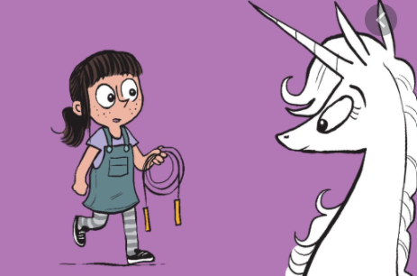
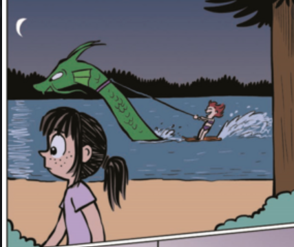
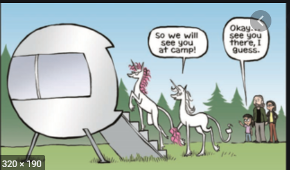
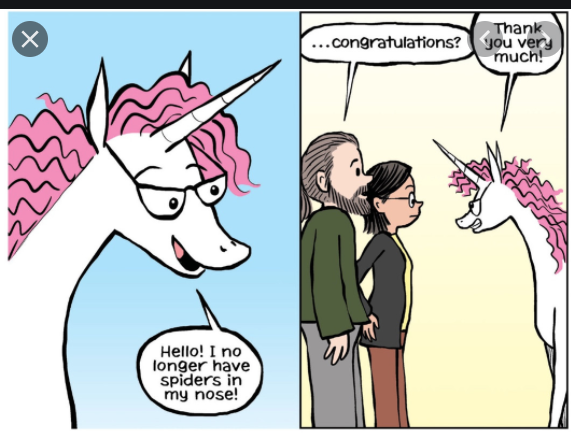
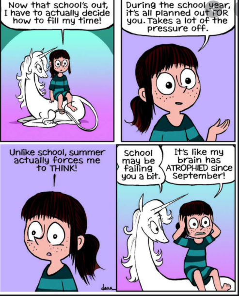
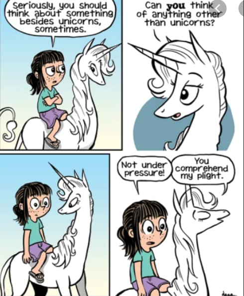
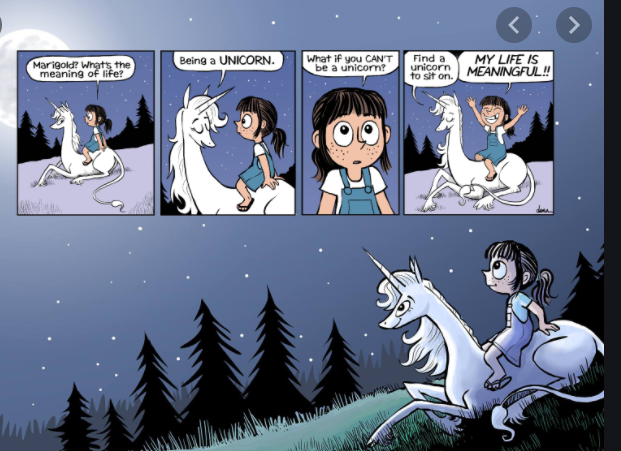
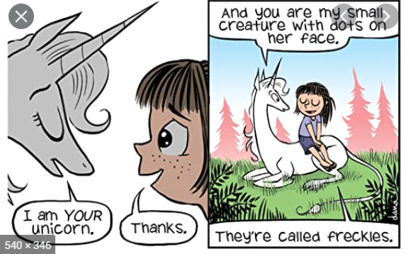
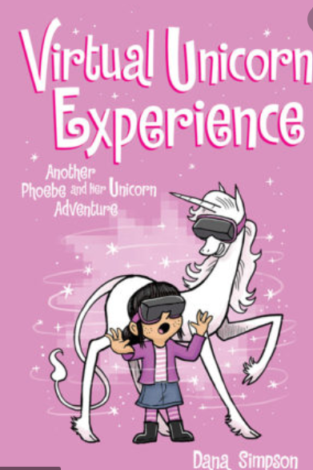

My Favourite book characters
I Like
Pheobe and her Unicorn

I like to read P.A.H.U(phoebe and her unicorn). I am just gonna do a quick summary of 13 books(I have not read 'Unicorn Famous' as it is not out on "Epic!").
P.S its very long...
A boy and his dog, a girl and her...unicorn? After Phoebe threw a rock into the lake, it hit a (sassy) unicorn who was "trapped" by her own reflection. 'Sometimes I cannot look away from my beauty for days that I miss Friday night hornball! Oh, the horror, I have never been so happy to see you, less attractive creature' said the (very sassy) unicorn. She said her name was Marigold Heavenly Nostrils, she also said that she would grant Phoebe 1 wish for "saving" her. Pheobe wished to be best friends! Anyway they quickly bonded.Then they had a dilemma, they had nothing to do. So they played detective agency. Phoebe had lost an elephant pencil topper. Thye immediattly suspected Dakota who is Phoebe's school bully.(the pencil topper was with Phoebe all along).
Anyway Marigold got revenge by saying 'Child, as you took pheobes pencil topper I shall give her your you-topper' then Marigold took her hair. Marigold gave it back but its really long magic hair. Prunella Von Blaart (queen of goblins) wanted Dakota's hair and kidnapped her. But they got her out of that, but they meet again at Todd's Party. Todd is a candy breathing dragon they met on Halloween, a few days before Phoebe met her new spelling bee partner, Max(they're really good friends now.) And on Valentine's day Marigold's secret crush for Lord Splendid Humility was revealed. He doesnt show his face so his humility remains splendid!Then during the book "The magic Storm" they find the cause of a storm on a fine day. It was Voltina(lighning dragon). Goblins kicked her out of the goblin town, so she learned dark magic to create storms to eat lightning because she feels lonely and lightning comforts her. Max convin ced Voltina to come home with him and eat his potato batteries. Then at camp "Wolfgang" Phoebe and Marigold meet Sue a crazy girl best friends with Ringo the lake monster Marigold likes Ringo because Lord SplendidHumility is Marigold's sister Florence Unfortunate Nostrils's boyfriend .They met Florence at unicorn camp she is happy she no longer has 'unfortunate nostrils'  Pheobe was jealous that Marigold is always spending time Florence at unicorn camp. But they are best friends after all. After Florence left, they had a happily ever after.
Moral: Even though Pheobe is weird  and Marigold is sassy they are best friends who support each other no matter what, they are very caring topwards each other and they had a lot of fun together.
THE END